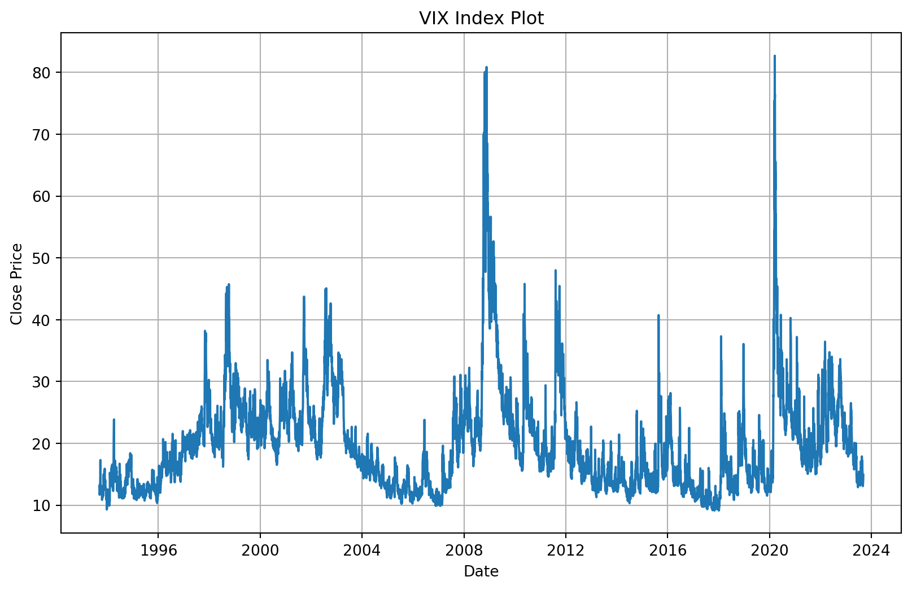
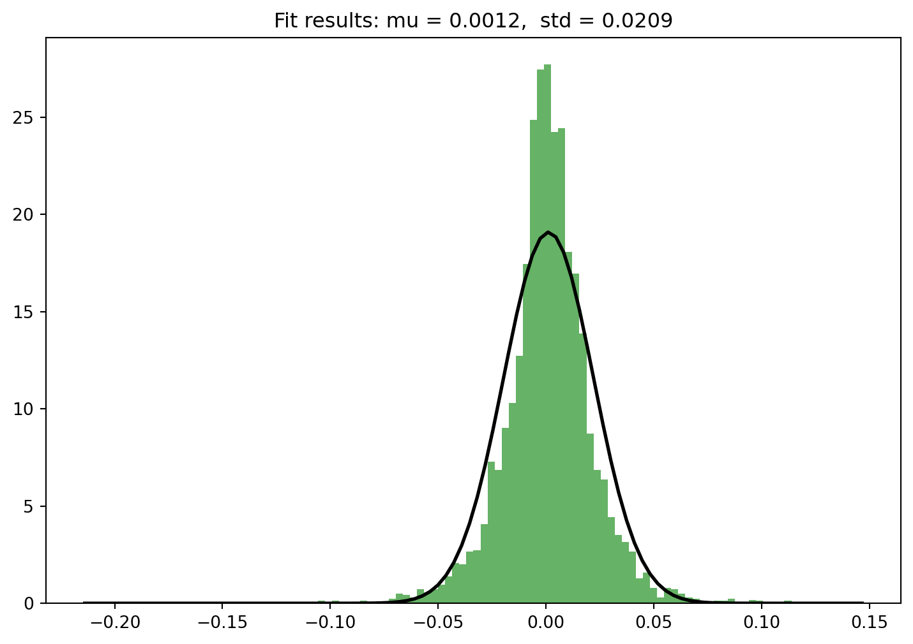
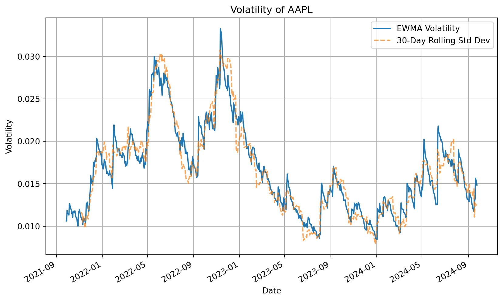
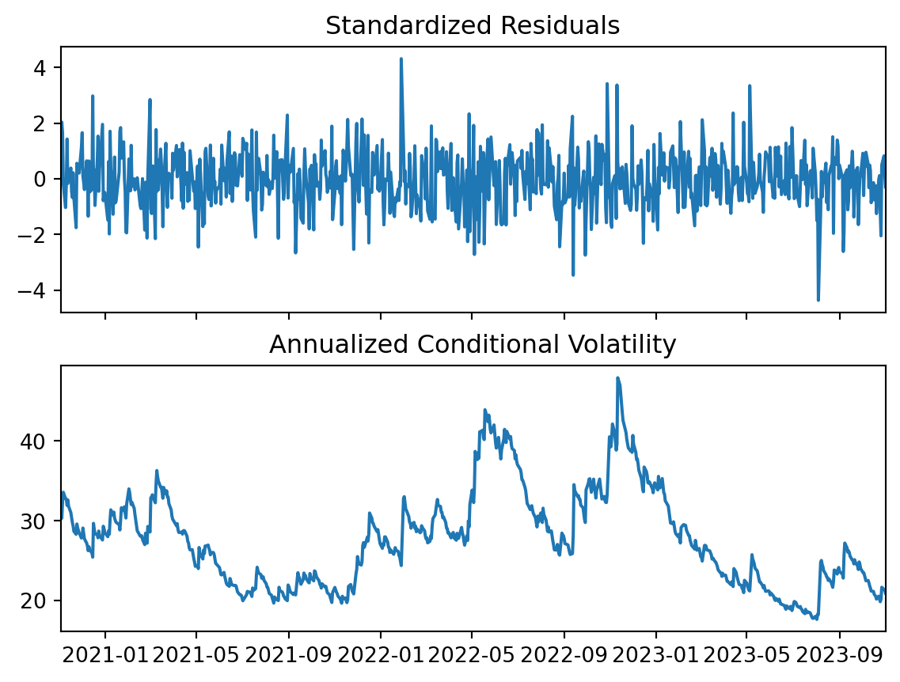
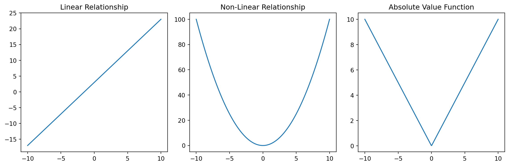
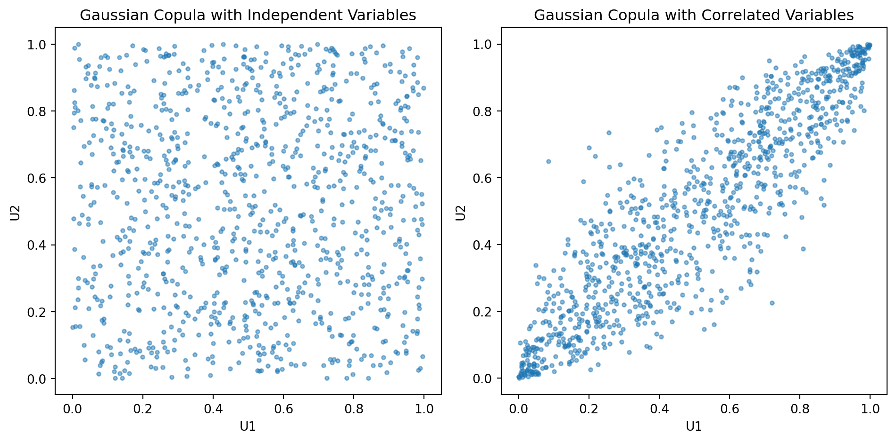
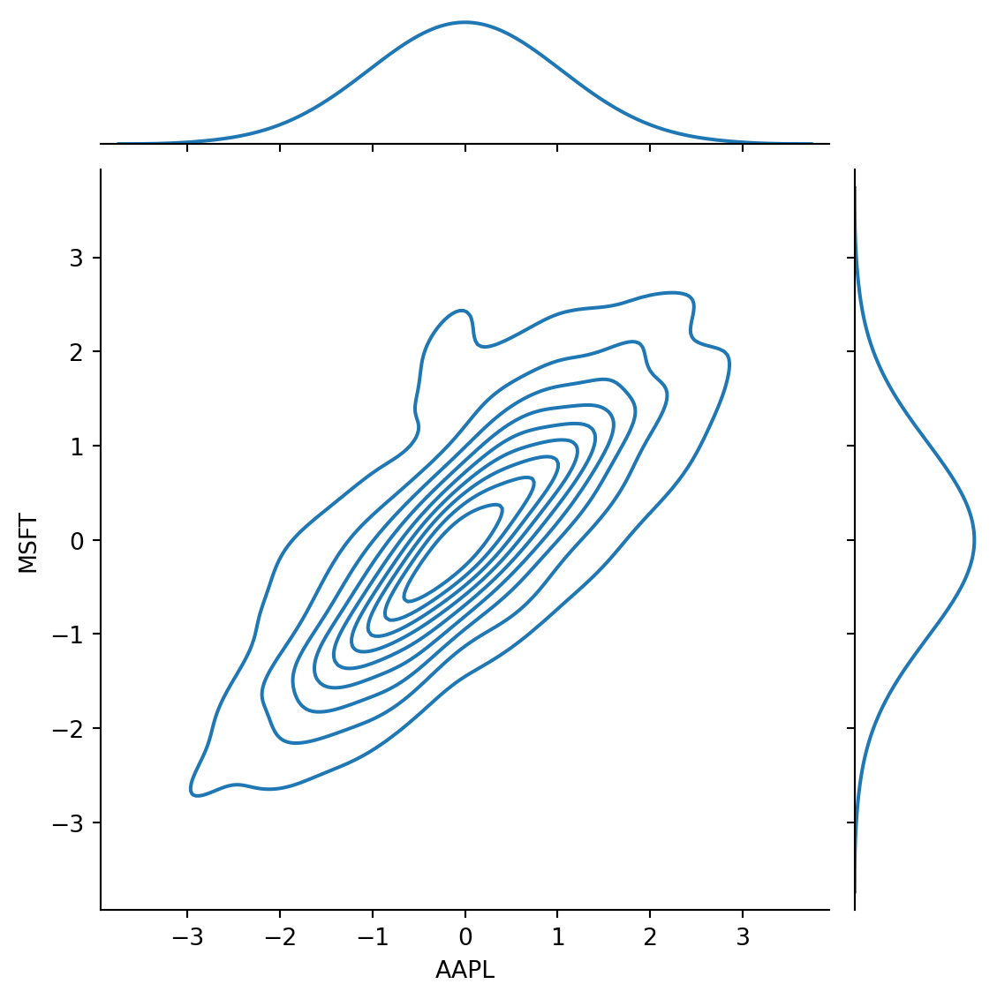
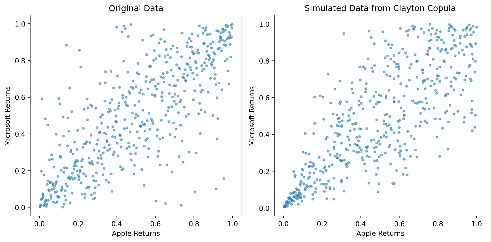

Hull, J. C. 2023. Risk Management and Financial Institutions. Wiley Finance.
Chapter 8 - Volatility
Chapter 9 - Correlations and Copulas
Chapter 10 - Valuation and Scenario Analysis
Learning outcomes:
Understand the concept of volatility and implied volatility.
Become familiar with standard volatility models like EWMA and GARCH(1,1).
Explore basic concept of correlation and copulas.
Describe the funcioning of a simple copula.
Be aware of copulas shortcomings and criticism.
Describe the process of valuation and scenario analysis.
5.1 Volatility
Monitoring the volatilities of market variables such as exchange rates, equity prices, and commodity prices is crucial for a financial institution to manage the value of its portfolio.
The popular models are Exponentially Weighted Moving Average (EWMA), Autoregressive Conditional Heteroscedasticity (ARCH), and Generalized Autoregressive Conditional Heteroscedasticity (GARCH).
These models acknowledge that volatility is not constant and varies over time; it can be low during some periods and high during others.
5.1.1 Definition of Volatility
The volatility, \(\sigma\), is usually calculated as a standard deviation of daily returns.
When volatility is used for option pricing, the unit of time is usually one year.
When volatility is used for risk management, the unit of time is usually one day.
Volatility is usually much greater when the market is open than when it is closed.
For this reason time is usually measured in trading days not calendar days.
It is assumed that there are 252 trading days in one year for most assets.
import pandas as pdimport yfinance as yfimport matplotlib.pyplot as plt# Download historical data for VIXdata = yf.download("^VIX", period="30y", progress=False)# Plot the closing priceplt.figure(figsize=(10, 6))plt.plot(data["Close"])plt.title("VIX Index Plot")plt.xlabel("Date")plt.ylabel("Close Price")plt.grid(True)plt.show()

5.1.3 Are Daily Percentage Changes in Financial Variables Normal?
The following code tests if the daily returns AAPL are normally distributed.
Download daily data from Yahoo Finance, calculate log returns, and show descriptive statistics.
Code
import numpy as npimport pandas as pdimport yfinance as yfimport matplotlib.pyplot as pltfrom scipy.stats import norm, kstest# Download historical data for AAPLdata = yf.download("AAPL", period="20y", progress=False)# Calculate the daily returnsdata["Return"] = np.log(data["Close"] / data["Close"].shift(1)).dropna()# Show descriptive statisticsdesc = pd.DataFrame(data["Return"].describe())print("Descriptive Statistics:")print(desc)
Descriptive Statistics:
Return
count 5033.000000
mean 0.001214
std 0.020955
min -0.197470
25% -0.008716
50% 0.001062
75% 0.011998
max 0.130194
Plot the histogram of returns and fit a normal distribution to the data.
It is visible that AAPL returns are not normally distributed.
AAPL shows fat tails (heavy-tailed distribution) which means that large changes in the variable are more likely compared to normal distribution.
Code
# Plot the histogram of returnsplt.figure(figsize=(9, 6))plt.hist(data["Return"], bins=100, density=True, alpha=0.6, color="g")# Fit a normal distribution to the datamu, std = norm.fit(data["Return"].dropna())# Plot the PDFxmin, xmax = plt.xlim()x = np.linspace(xmin, xmax, 100)p = norm.pdf(x, mu, std)plt.plot(x, p, "k", linewidth=2)title ="Fit results: mu = %.4f, std = %.4f"% (mu, std)plt.title(title)plt.show()

Use Kolmogorov-Smirnov test to check normality of the returns.
The Kolmogorov-Smirnov (K-S) test is a non-parametric test used to determine if a sample data set follows a specific distribution, such as the normal distribution.
\(H_0:\) The sample data follows the normal distribution.
\(H_1:\) The sample data does not follow the normal distribution.
p-value in this example is extremely small, therfore, \(H_0\) could be rejected.
5.1.4 The Exponentially Weighted Moving Average Model
The Exponentially Weighted Moving Average (EWMA) model for volatility is a method of measuring the volatility of financial returns where more weight is assigned to more recent returns.
This is in contrast to the simple moving average model, which assigns equal weight to all observations in the sample.
The idea behind giving more weight to recent returns is that they are more indicative of future volatility than older returns.
The EWMA model can be defined by the following equation:
\(\sigma_{t}^{2}\) is the forecasted variance for time \(t\),
\(\sigma_{t-1}^{2}\) is the variance for time \(t-1\),
\(r_{t-1}^{2}\) is the square of the return at time \(t-1\),
and \(\lambda\) is the decay factor, which determines the weights.
In the EWMA model, \(\lambda\) lies between 0 and 1.
A smaller \(\lambda\) will assign more weight to recent returns.
Now let’s implement a simple numerical example in Python.
In this example, we first download the historical closing prices for AAPL and compute the daily returns.
We then calculate the volatility series using the EWMA model, with a decay factor of 0.94.
Finally, we plot the volatility series.
Code
import pandas as pdimport yfinance as yfimport numpy as npimport matplotlib.pyplot as plt# Download historical data for AAPLpepedata = yf.download("AAPL", period="3y", progress=False)# Calculate the daily returnsdata["Return"] = np.log(data["Close"] / data["Close"].shift(1))# Drop missing valuesdata = data.dropna().copy()# Set the decay factorlambda_factor =0.94# Initialize the variancevariance = data["Return"][0] **2# Initialize the volatility series with the first variancevolatility_series = [np.sqrt(variance)]# Calculate the volatility seriesfor t inrange(1, len(data)): variance = ( lambda_factor * variance + (1- lambda_factor) * data["Return"].iloc[t -1] **2 ) volatility_series.append(np.sqrt(variance))# Convert volatility series to pandas Seriesvolatility_series = pd.Series(volatility_series, index=data.index)# Calculate the rolling 30-day standard deviation as volatilitydata["30D Std Dev"] = data["Return"].rolling(window=30).std()# Plot the volatilityplt.figure(figsize=(10, 6))volatility_series.plot(label="EWMA Volatility")data["30D Std Dev"].plot(label="30-Day Rolling Std Dev", linestyle="--", alpha=0.7)plt.title("Volatility of AAPL")plt.xlabel("Date")plt.ylabel("Volatility")plt.legend()plt.grid(True)plt.show()

5.1.5 The GARCH(1,1) Model
The Generalized Autoregressive Conditional Heteroskedasticity (GARCH) model is a statistical model used to estimate the volatility of financial markets.
The GARCH(1,1) model is the most widely used GARCH variant, where “1,1” indicates that the model uses one lag of the squared residuals (ARCH term) and one lag of the conditional variance (GARCH term).
\(\sigma_{t}^{2}\) is the conditional variance at time \(t\),
\(r_{t-1}^{2}\) is the square of the return at time \(t-1\),
\(\sigma_{t-1}^{2}\) is the conditional variance at time \(t-1\),
\(\omega\), \(\alpha\), and \(\beta\) are parameters to be estimated. \(\alpha\) is the ARCH parameter that determines the impact of the previous error, and \(\beta\) is the GARCH parameter that determines the impact of the previous period’s variance.
In a GARCH(1,1) model, the variance today depends on the weighted average of long-term variance (\(\omega\)), the impact of the return from the previous day (\(\alpha\)), and the variance observed the previous day (\(\beta\)).
We can estimate a GARCH(1,1) model in Python using the arch package.
Here’s an example with real historical data for the Apple Inc. (AAPL) stock.
import pandas as pdimport numpy as npimport yfinance as yffrom arch import arch_modelimport matplotlib.pyplot as plt# Download historical data for AAPLdata = yf.download("AAPL", period="3y", progress=False)# Calculate the daily returnsdata["Return"] = np.log(data["Close"] / data["Close"].shift(1)) *100# Drop missing valuesdata = data.dropna()# Define the GARCH modelmodel = arch_model(data["Return"], vol="Garch", p=1, q=1)# Fit the modelmodel_fit = model.fit(disp=False)# Print the summary of the modelprint(model_fit.summary())# Plot the conditional standard deviationmodel_fit.plot(annualize="D")plt.show()
Constant Mean - GARCH Model Results
==============================================================================
Dep. Variable: Return R-squared: 0.000
Mean Model: Constant Mean Adj. R-squared: 0.000
Vol Model: GARCH Log-Likelihood: -1501.88
Distribution: Normal AIC: 3011.76
Method: Maximum Likelihood BIC: 3030.26
No. Observations: 753
Date: Thu, Sep 07 2023 Df Residuals: 752
Time: 10:26:37 Df Model: 1
Mean Model
===========================================================================
coef std err t P>|t| 95.0% Conf. Int.
---------------------------------------------------------------------------
mu 0.1217 6.308e-02 1.929 5.369e-02 [-1.935e-03, 0.245]
Volatility Model
============================================================================
coef std err t P>|t| 95.0% Conf. Int.
----------------------------------------------------------------------------
omega 0.0463 2.943e-02 1.571 0.116 [-1.144e-02, 0.104]
alpha[1] 0.0446 1.251e-02 3.566 3.627e-04 [2.009e-02,6.912e-02]
beta[1] 0.9404 1.512e-02 62.190 0.000 [ 0.911, 0.970]
============================================================================
Covariance estimator: robust

In this script, we first download the historical closing prices for AAPL and compute the daily log returns (in percentage for model easier estimation).
We then define a GARCH(1,1) model and fit the model to the returns data.
The arch_model function is used to define the GARCH model, where p=1 and q=1 specify the GARCH(1,1) model.
Finally, we print the summary of the model fit, which includes the estimated parameters, and plot the conditional standard deviation.
The plot shows the evolution of the estimated volatility over time.
Please note that the code uses daily returns to fit the model, which may lead to extreme values in the estimation of the variance because of daily market noise. A solution could be to use longer periods (weekly, monthly), depending on the purpose of the analysis.
5.1.6 Choosing between the Models
GARCH(1,1) and EWMA models estimate financial market volatility.
GARCH(1,1) incorporates mean reversion, unlike EWMA.
Despite being complex, GARCH(1,1) is theoretically superior due to its consideration of mean reversion.
In GARCH(1,1), best-fit parameter estimation is critical.
If \(\omega\) is zero in GARCH(1,1), it reduces to EWMA.
If \(\omega\) is negative, GARCH(1,1) is unstable and EWMA is preferred.
5.2 Correlations
Risk managers need to estimate not just volatilities, but also correlations between changes in market variables when assessing risk exposures.
Correlations can be monitored in a similar manner to volatilities.
5.2.1 Definition of Correlation
Correlation between two variables, \(V1\) and \(V2\), is represented by the correlation coefficient \(\rho\), calculated using the formula:
Though understanding correlation may be more intuitive, covariances prove to be fundamental in the analysis.
Two variables are statistically independent if knowing one doesn’t affect the probability distribution for the other. Formal representation:
\[
f(V_2|V_1 = x) = f(V_2)
\]
for all \(x\), where \(f(.)\) represents the probability density function.
Zero correlation doesn’t imply no dependence between variables.
Correlation measures linear dependence, but there can be many other ways two variables can relate. These relationships can be visualized by plotting \(E(V_2)\) against \(V_1\).
In certain situations, the standard deviation of \(V_2\) depends on the value of \(V_1\), indicating another aspect of how \(V_2\) depends on \(V_1\).
Code
import numpy as npimport matplotlib.pyplot as plt# Generate a range of x valuesx = np.linspace(-10, 10, 400)# Linear Relationshipy_linear =2* x +3plt.figure(figsize=(12, 4))plt.subplot(1, 3, 1)plt.plot(x, y_linear)plt.title("Linear Relationship")# Non-linear Relationship (Quadratic)y_nonlinear = x**2plt.subplot(1, 3, 2)plt.plot(x, y_nonlinear)plt.title("Non-Linear Relationship")# Absolute Value Functiony_abs = np.abs(x)plt.subplot(1, 3, 3)plt.plot(x, y_abs)plt.title("Absolute Value Function")plt.tight_layout()plt.show()

5.2.2 Monitoring Correlation
It is common to work with variance-covariance matrices.
Similar approaches as Exponentially Weighted Moving Average (EWMA) and GARCH models can be used to monitor the covariance rate between two variables.
The returns on variables \(X\) and \(Y\) on day \(i\) are:
\[
x_i = \frac{X_i - X_{i-1}}{X_{i-1}}
\]
\[
y_i = \frac{Y_i - Y_{i-1}}{Y_{i-1}}
\]
The covariance rate between \(X\) and \(Y\) on day \(n\) is:
\[
\text{cov}_n = E(x_n y_n) - E(x_n)E(y_n)
\]
In practice, risk managers assume that expected daily returns are zero when calculating the covariance rate per day, hence the covariance rate per day between \(X\) and \(Y\) on day \(n\) is simplified to:
\[
\text{cov}_n = E(x_n y_n)
\]
Using equal weights for the last \(m\) observations on \(x_i\) and \(y_i\) gives the following:
The Exponentially Weighted Moving Average (EWMA) model can be used to weigh recent observations more heavily. The formula for updating a covariance estimate in the EWMA model is:
The lower the value of \(\lambda\), the greater the weight that is given to recent observations.
GARCH models can also be used for updating covariance rate estimates and forecasting the future level of covariance rates. The GARCH(1,1) model for updating a covariance rate between \(X\) and \(Y\) is:
This formula gives some weight to a long-run average covariance, some to the most recent covariance estimate, and some to the most recent observation on covariance.
The long-term average covariance rate is \(\omega / (1 - \alpha - \beta)\).
Example of covariance between Apple and Microsoft from the past 5 years of daily returns:
Code
import yfinance as yfimport numpy as np# Download daily closing prices of Apple and Microsoft from the past 5 yearsdf = yf.download(["AAPL", "MSFT"], period="5y", progress=False)["Adj Close"]# Calculate daily returnsdf = df.pct_change().dropna()# Define decay factor and initialize covariancedecay_factor =0.94ewma_cov = df["AAPL"].iloc[0] * df["MSFT"].iloc[0]# Calculate EWMA covariancefor i inrange(1, len(df)): ewma_cov = ( decay_factor * ewma_cov+ (1- decay_factor) * df["AAPL"].iloc[i] * df["MSFT"].iloc[i] )print(f"The EWMA covariance is: {ewma_cov}")
The EWMA covariance is: 8.769791950630853e-05
5.3 Copulas
This section introduces the concept of copulas, which define a correlation structure between two or more variables, regardless of the shapes of their probability distributions.
It illustrates how a copula can model default correlation for a portfolio of loans, a model that forms part of the Basel II capital requirements.
5.3.1 Introduction to Copulas
In risk management, copulas are statistical tools used to model and manage dependencies among different risk types or among different components within a risk type.
A copula is a function that links univariate marginal distributions to their joint multivariate distribution.
Copulas allow risk managers to separate the study of the behavior of individual risk factors (captured by the marginal distributions) from the study of the dependencies among these risk factors (captured by the copula).
This separation property is particularly useful in risk management because it allows practitioners to fit marginal distributions and dependency structures separately.
Some key points:
Multivariate distribution: When dealing with multiple risk factors, it is often necessary to understand their joint behavior, which is described by their multivariate distribution. However, multivariate distributions can be difficult to estimate and work with directly.
Marginal distributions and copulas: The copula approach decomposes the multivariate distribution into marginal distributions (one for each risk factor) and a copula that captures the dependencies among the risk factors.
Benefits: The benefits of copulas include flexibility in modeling and the ability to capture a wide range of dependency structures. Different copula types can be used to model different types of dependencies (e.g., Gaussian copula, t-copula, etc.).
Applications: In risk management, copulas are used in various applications, such as estimating portfolio credit risk, modeling the spread of contagion in financial networks, pricing complex derivatives, and more.
Limits and criticisms: Despite their benefits, copulas also have limits. In particular, they have been criticized for their role in the financial crisis of 2007-2008, where the widespread use of Gaussian copulas for modeling dependencies among mortgage-backed securities led to underestimation of risk due to the fact that Gaussian copulas do not capture tail dependence well.
Applications in risk management:
Portfolio Risk Management: Copulas can model the dependence structure between different assets in a portfolio, separate from their individual behaviors. This allows for a more accurate computation of portfolio risk measures, such as Value-at-Risk (VaR) and Expected Shortfall (ES), by capturing the impact of extreme joint movements in asset prices.
Credit Risk Management: Copulas are extensively used in the pricing and risk management of credit derivatives, especially Collateralized Debt Obligations (CDOs). They can model the likelihood of joint default events (default correlations) across different entities. The Gaussian copula was famously used in the pricing of CDOs in the run-up to the 2007-2008 financial crisis.
Operational Risk Management: In operational risk, losses are usually due to a number of high impact, low frequency events (e.g., legal risks, risks of fraud, etc.). Copulas can be used to model the dependencies among these different types of operational risks, improving the accuracy of capital requirement calculations.
Insurance Risk Management: Copulas can also be used to model dependencies in insurance claims from different sectors or regions, helping insurers to better manage their overall risk.
Stress Testing: Copulas can be useful in stress testing scenarios. By defining the dependence structure between various risk factors, stress tests can be more accurately modeled to reflect extreme conditions.
5.3.2 Gaussian Copula
A Gaussian copula is a specific type of copula used to model the dependency structure among various dimensions or variables.
It assumes that these dependencies follow a multivariate normal distribution.
To understand the Gaussian copula, consider a collection of random variables.
Each of these variables has its own individual (marginal) distribution, which describes its behavior.
The copula then describes how these variables interact or are correlated with each other.
Simplified description of how a Gaussian copula is constructed:
Start with random variables: Let’s say we have a set of random variables, each following its own arbitrary distribution.
Transform to uniform: Apply the cumulative distribution function (CDF) to each random variable. This transforms each variable into a uniform distribution on the interval [0, 1].
Apply inverse Gaussian CDF: Take these uniform variables and apply the inverse of the cumulative distribution function of the multivariate normal distribution. This step ensures that the new variables have a multivariate normal distribution.
Correlation Matrix: The Gaussian copula is parameterized by a correlation matrix, which captures the dependencies among the variables.
The Gaussian copula is popular due to its simplicity and the tractability of the Gaussian distribution.
However, it has limitations, particularly in modeling tail dependencies.
It was famously used in the pricing of collateralized debt obligations (CDOs) and was implicated in the mispricing of risk that contributed to the 2008 financial crisis.
Code
import numpy as npimport matplotlib.pyplot as pltfrom scipy.stats import norm# Set the random seed for reproducibilitynp.random.seed(42)# Generate independent datadata_independent = np.random.normal(size=(1000, 2))# Generate correlated datacorrelated_mean = [0, 0]correlated_cov = [[1, 0.9], [0.9, 1]]data_correlated = np.random.multivariate_normal( correlated_mean, correlated_cov, size=1000)# Gaussian Copula for independent datau_independent = norm.cdf(data_independent)# Gaussian Copula for correlated datau_correlated = norm.cdf(data_correlated)# Plotting both scatter plots side by sidefig, axs = plt.subplots(1, 2, figsize=(10, 5))# Scatter plot for independent dataaxs[0].scatter(u_independent[:, 0], u_independent[:, 1], marker=".", alpha=0.5)axs[0].set_xlabel("U1")axs[0].set_ylabel("U2")axs[0].set_title("Gaussian Copula with Independent Variables")# Scatter plot for correlated dataaxs[1].scatter(u_correlated[:, 0], u_correlated[:, 1], marker=".", alpha=0.5)axs[1].set_xlabel("U1")axs[1].set_ylabel("U2")axs[1].set_title("Gaussian Copula with Correlated Variables")plt.tight_layout()plt.show()

5.3.3 Gaussian Copula Example
In this example, we’ll use historical data from two stocks to demonstrate the use of a Gaussian copula.
First, we’ll download the data and compute the daily returns for each stock.
Code
import yfinance as yfimport numpy as npimport pandas as pdimport matplotlib.pyplot as pltimport seaborn as snsfrom scipy.stats import norm, gaussian_kde# Download historical data for desired stockstickers = ["AAPL", "MSFT"]data = yf.download(tickers, period="2y", progress=False)["Adj Close"]# Calculate the daily returnsreturns = data.pct_change().dropna()
Next, we’ll transform these daily returns to be uniformly distributed by using the empirical cumulative distribution function.
Finally, we’ll transform these uniform variables to be normally distributed and plot the joint distribution to see their dependence structure.
Code
# Transform to standard normal distributionnorm_aapl = norm.ppf(ecdf_aapl)norm_msft = norm.ppf(ecdf_msft)# Create DataFrame for plottingdf_norm = pd.DataFrame({"AAPL": norm_aapl, "MSFT": norm_msft})# Plot joint distributionsns.jointplot(data=df_norm, x="AAPL", y="MSFT", kind="kde")plt.show()

The plot shows a smoothed estimate of the joint distribution of the transformed returns.
There is a clear linear pattern suggesting a strong dependence between the two stocks’ returns.
Remember, in practice, you should check the appropriateness of the Gaussian copula for your data.
While it’s a simple and popular choice, it might not always capture the dependence structure correctly, especially in the tails of the distribution.
5.3.4 Clayton Copula Example
Tail Dependence: The main difference between the Clayton and Gaussian copulas is how they model tail dependence. The Clayton copula is suitable for modeling lower tail dependence (correlation between extreme negative values), while the Gaussian copula can model both lower and upper tail dependence, but not as effectively for extreme values.
Parameterization: The Clayton copula uses a single parameter (the Clayton parameter) to determine the strength and direction of the dependence. In contrast, the Gaussian copula uses a correlation matrix to model the linear dependence between variables.
Origins: The Clayton copula is an Archimedean copula, while the Gaussian copula is derived from the multivariate normal distribution.
This example fetches historical stock data for two companies (e.g., Apple and Microsoft) and shows their tail dependence using the Clayton copula.
The plots show the lower tail dependence between the daily returns of Apple and Microsoft.
This can be helpful for analyzing the risk of simultaneous extreme losses in these two stocks.
Code
import numpy as npimport matplotlib.pyplot as pltimport yfinance as yffrom copulas.univariate import GaussianKDEfrom copulas.bivariate import Claytonfrom scipy.stats import rankdata# Fetch historical stock data from Yahoo Financestock_A = yf.download("AAPL", period="2y", progress=False)["Adj Close"]stock_B = yf.download("MSFT", period="2y", progress=False)["Adj Close"]# Calculate daily returnsreturns_A = stock_A.pct_change().dropna()returns_B = stock_B.pct_change().dropna()# Transform data to uniform marginals using rank transformu1 = rankdata(returns_A) / (len(returns_A) +1)u2 = rankdata(returns_B) / (len(returns_B) +1)# Fit a Clayton copula to the transformed datacopula = Clayton()copula.fit(np.column_stack((u1, u2)))# Simulate data from the copulasimulated_data = copula.sample(len(returns_A))# Plot the original and simulated datafig, axs = plt.subplots(1, 2, figsize=(10, 5))axs[0].scatter(u1, u2, marker=".", alpha=0.5)axs[0].set_xlabel("Apple Returns")axs[0].set_ylabel("Microsoft Returns")axs[0].set_title("Original Data")axs[1].scatter(simulated_data[:, 0], simulated_data[:, 1], marker=".", alpha=0.5)axs[1].set_xlabel("Apple Returns")axs[1].set_ylabel("Microsoft Returns")axs[1].set_title("Simulated Data from Clayton Copula")plt.tight_layout()plt.show()

5.4 Valuation and Scenario Analysis
Valuation and Scenario Analysis: Both activities used by financial institutions, concerned with estimating future cash flows, but with different objectives.
Valuation: Aims to estimate the present value of future cash flows. Calculates expected values of future cash flows across all outcomes and discounts them to today.
Scenario Analysis: Focuses on exploring the full range of future situations, often emphasizing adverse outcomes to answer “How bad can things get?”
Risk-Neutral Projections: Used for valuation, helpful for time-evolving variables or when an outcome depends on a particular discrete event, such as a company defaulting.
5.5 Practice Questions and Problems
5.5.1 Volatility
The volatility of an asset is 2% per day. What is the standard deviation of the per- centage price change in three days?
The volatility of an asset is 25% per annum. What is the standard deviation of the percentage price change in one trading day? Assuming a normal distribution with zero mean, estimate 95% confidence limits for the percentage price change in one day.
What is implied volatility? What does it mean if different options on the same asset have different implied volatilities?
Calculate daily volatility using the last 30 observations for selected asset.
Test normality of daily returns for selected asset.
Explain the exponentially weighted moving average (EWMA) model for estimating volatility from historical data.
What is the difference between the exponentially weighted moving average model and the GARCH(1,1) model for updating volatilities?
The most recent estimate of the daily volatility of an asset is 1.5% and the price of the asset at the close of trading yesterday was $30.00. The parameter \(\lambda\) in the EWMA model is 0.94. Suppose that the price of the asset at the close of trading today is $30.50. How will this cause the volatility to be updated by the EWMA model?
A company uses an EWMA model for forecasting volatility. It decides to change the parameter \(\lambda\) from 0.95 to 0.85. Explain the likely impact on the forecasts.
A company uses the GARCH(1,1) model for updating volatility. The three param- eters are \(\omega\), \(\alpha\), and \(\beta\). Describe the impact of making a small increase in each of the parameters while keeping the others fixed.
Assume that an index at close of trading yesterday was 1,040 and the daily volatility of the index was estimated as 1% per day at that time. The parameters in a GARCH(1,1) model are \(\omega\) = 0.000002, \(\alpha\) = 0.06, and \(\beta\) = 0.92. If the level of the index at close of trading today is 1,060, what is the new volatility estimate?
5.5.2 Correlations and Copulas
If you know the correlation between two variables, what extra information do you need to calculate the covariance?
What is the difference between correlation and dependence? Suppose that \(y = x^2\) and \(x\) is normally distributed with mean zero and standard deviation one. What is the correlation between \(x\) and \(y\)?
Explain what is meant by tail dependence. How can you vary tail dependence by the choice of copula?
Calculate Clayton copula for selected asset and show appropriate graphs.
5.5.3 Valuation and Scenario Analysis
What is the difference between valuation and scenario analysis?
What is meant by risk-neutral valuation and the risk-neutral world?
A stock price has an expected return of 12% and a volatility of 20%. It is currently $50. What is the probability that it will be greater than $70 in two years?
An analyst calculates the expected future value of a stock index in (a) the real world and (b) the risk-neutral world. Which would you expect to be higher? Why?
The value of a derivative that pays off $100 after one year if a company has defaulted during the year is $3. The value of a derivative that pays off $100 after one year if a company has not defaulted is $95. What is the risk-free rate? What is the risk neutral probability of default?
Explain why it is sometimes necessary to work in both the real world and the risk-neutral world when carrying out a scenario analysis to determine a confi- dence interval for the value of a portfolio in one year.